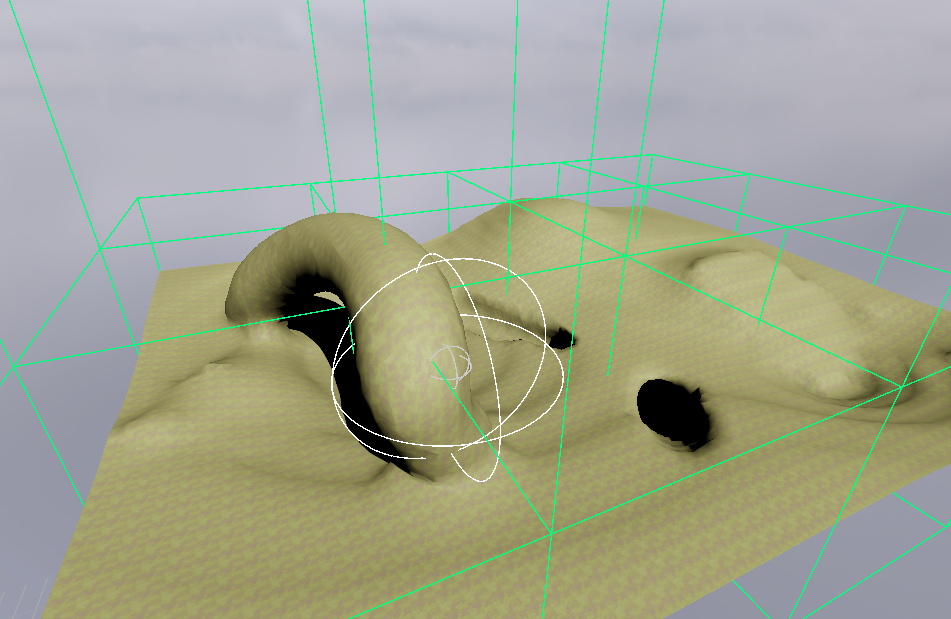
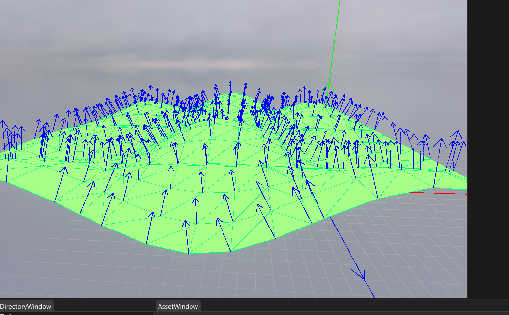
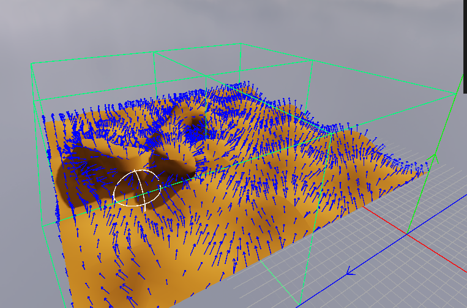
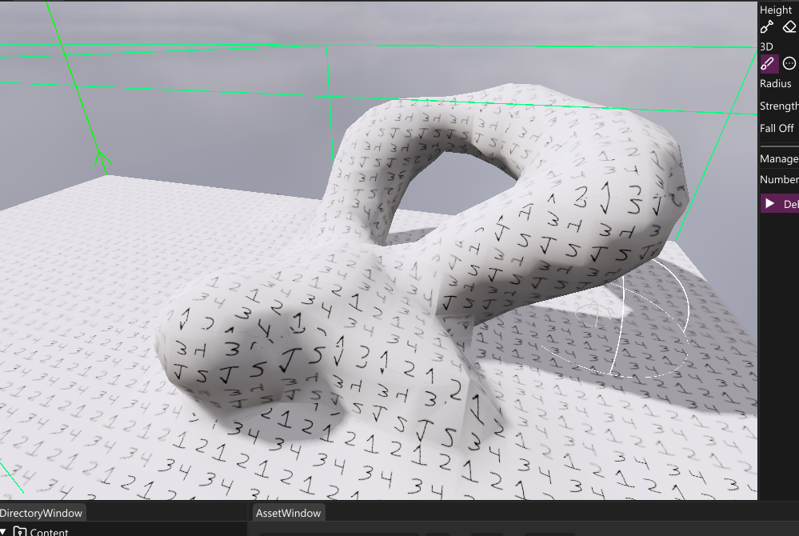
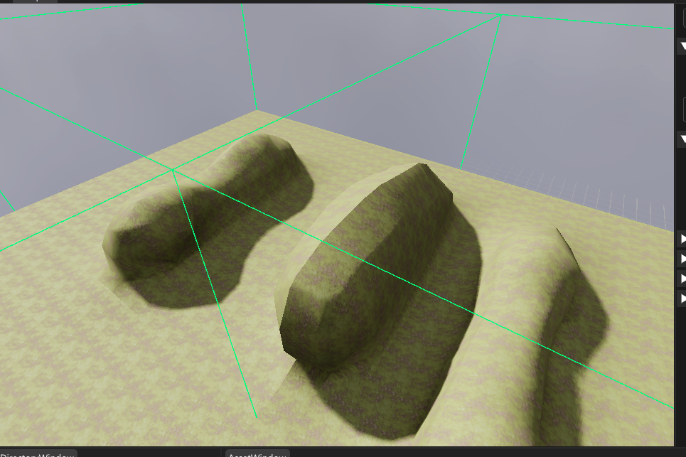
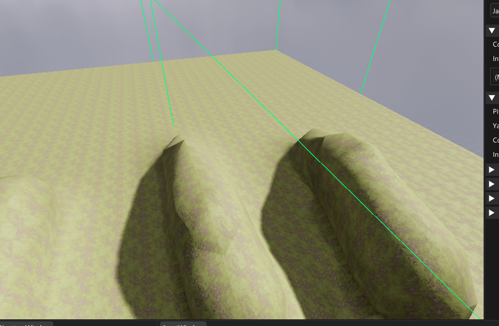

Terrain Editor

Overview
This was my specialization project at The Game Assembly. This terrain editor lets the user create terrain both by rasing and lowering terrain, but also by sculpting in 3D.Instead of using a heightmap, the terrain is generated with the Marching Cubes algorithm. This makes it possible to sculpt things like tunnels and overhangs, something that would not be possible using a heightmap.
Hear is a breakdown of how I created this terrain editor:
Creating a mesh
My first step was to implement the marching cubes algorithm. The algorithm works by taking a 3D grid of values, in my case ranging from 0 to 1. It then goes through all the values. For each point it checks the neigbouring 7 points, making a local cube out of all the points. The algorithm then creates triangles inside this cube depending on the values of the points.
Insert explaining gif
I started of with a fixed grid that would create a wave like patern
1constexpr uint32_t size = 17;
2std::vector<float> testValues;
3testValues.resize(size * size * size);
4for (uint32_t z = 0; z < size; ++z)
5{
6 for (uint32_t y = 0; y < size; ++y)
7 {
8 for (uint32_t x = 0; x < size; ++x)
9 {
10 testValues[size * size * z + size * y + x] =
11 FMath::Clamp((static_cast<float>(y) + sin(static_cast<float>(x) * 0.6f)
12 * cos(static_cast<float>(z) * 0.6f)) / 16.f, 0.f, 1.f);
13 }
14 }
15}
I then made my first implementation of the algorithm, generating all vertices making a flat shaded mesh.
1constexpr float surfaceLevel = 0.5f;
2
3void TerrainCreation::GenerateMesh(Goose::ModelAsset::MeshData& aMeshData, const std::vector<float>& aVoxelValues,
4const uint32_t aSize)
5{
6 std::vector<Tga::Vector3f> vertexPositions;
7 const uint32_t squaredSize = aSize * aSize;
8 const uint32_t cellSize = aSize - 1;
9
10 for (uint32_t z = 0; z < cellSize; ++z)
11 {
12 for (uint32_t y = 0; y < cellSize; ++y)
13 {
14 for (uint32_t x = 0; x < cellSize; ++x)
15 {
16 uint32_t cubeIndex{};
17 float dataCube[8]{};
18
19 for (uint32_t i = 0; i < std::size(cornerChecks); i++)
20 {
21 const Tga::Vector3ui& check = cornerChecks[i];
22 dataCube[i] = aVoxelValues[(z + check.z) * squaredSize +
23 (y + check.y) * aSize + x + check.x];
24 if (dataCube[i] > surfaceLevel)
25 {
26 cubeIndex |= 1 << i;
27 }
28 }
29
30 const Tga::Vector3f origin(static_cast<float>(x),
31 static_cast<float>(y),
32 static_cast<float>(z));
33
34 for (int a = 0; localTriangleTable[cubeIndex][a] != -1; a += 3)
35 {
36 const int startEdgeIndex0 =
37 localEdgeIndices[localTriangleTable[cubeIndex][a]][0];
38 const int endEdgeIndex0 =
39 localEdgeIndices[localTriangleTable[cubeIndex][a]][1];
40
41 const int startEdgeIndex1 =
42 localEdgeIndices[localTriangleTable[cubeIndex][a + 1]][0];
43 const int endEdgeIndex1 =
44 localEdgeIndices[localTriangleTable[cubeIndex][a + 1]][1];
45
46 const int startEdgeIndex2 =
47 localEdgeIndices[localTriangleTable[cubeIndex][a + 2]][0];
48 const int endEdgeIndex2 =
49 localEdgeIndices[localTriangleTable[cubeIndex][a + 2]][1];
50
51 vertexPositions.emplace_back(origin + FMath::Lerp(cornerTable[startEdgeIndex0],
52 cornerTable[endEdgeIndex0],
53 (surfaceLevel - dataCube[startEdgeIndex0]) / (
54 dataCube[endEdgeIndex0] - dataCube[startEdgeIndex0])));
55
56 vertexPositions.emplace_back(origin + FMath::Lerp(cornerTable[startEdgeIndex1],
57 cornerTable[endEdgeIndex1],
58 (surfaceLevel - dataCube[startEdgeIndex1]) / (
59 dataCube[endEdgeIndex1] - dataCube[startEdgeIndex1])));
60
61 vertexPositions.emplace_back(origin + FMath::Lerp(cornerTable[startEdgeIndex2],
62 cornerTable[endEdgeIndex2],
63 (surfaceLevel - dataCube[startEdgeIndex2]) / (
64 dataCube[endEdgeIndex2] - dataCube[startEdgeIndex2])));
65 }
66 }
67 }
68 }
69
70 aMeshData.Vertices.resize(vertexPositions.size());
71 aMeshData.Indices.resize(vertexPositions.size());
72
73 for (uint32_t i = 0; i < vertexPositions.size(); ++i)
74 {
75 aMeshData.Vertices[i].Position = vertexPositions[i];
76 aMeshData.Vertices[i].Position.w = 1.f;
77 aMeshData.Indices[i] = i;
78 }
79
80 aMeshData.NumberOfVertices = vertexPositions.size();
81 aMeshData.NumberOfIndices = vertexPositions.size();
82
83 aMeshData.Bounds.BoxExtents = Tga::Vector3f(static_cast<float>(cellSize));
84 aMeshData.Bounds.Center = aMeshData.Bounds.BoxExtents * 0.5f;
85 aMeshData.Bounds.Radius = sqrtf(static_cast<float>(cellSize * cellSize * cellSize));
86
87 Goose::ModelLoader::CreateMeshBuffers(aMeshData);
88}
The first tools
When I had a mesh to use as reference I moved on to creating the editing tools. The first one I made was a 3D sculpting tool that would raise the value of nearby points.
I then created a tool that would lower and raise terrain as if it was a heightmap.
Smooth shading
So far the terrain had duplicate vertices, which made the terrain flat shaded. This is not uncommon for marching cubes terrain in general but I wanted my terrain to be smooth. To do this, I needed to create a VertexID and a map going from VertexID to index inside the vertexPosition vector.
1struct VertexID
2{
3 Tga::Vector3<TerrainCreation::ChunkSizeType> pos1;
4 Tga::Vector3<TerrainCreation::ChunkSizeType> pos2;
5
6 bool operator==(const VertexID& aId) const
7 {
8 return pos1 == aId.pos1 && pos2 == aId.pos2;
9 }
10};
1
2std::vector<Tga::Vector3f> vertexPositions;
3std::unordered_map<VertexID, uint32_t> idToIndex;
1
2const Tga::Vector3f origin(x, y, z);
3const Tga::Vector3 baseId{ x,y,z };
4for (int a = 0; localTriangleTable[cubeIndex][a] != -1; a++)
5{
6 const int startEdgeIndex0 = localEdgeIndices[localTriangleTable[cubeIndex][a]][0];
7 const int endEdgeIndex0 = localEdgeIndices[localTriangleTable[cubeIndex][a]][1];
8
9 VertexID id{ .pos1 = baseId + cornerChecks[startEdgeIndex0],.pos2 = baseId + cornerChecks[endEdgeIndex0] };
10
11 const auto [iterator, result] = idToIndex.insert({ id, static_cast<uint32_t>(vertexPositions.size()) });
12
13 if (result)
14 {
15 vertexPositions.emplace_back(origin + FMath::Lerp(cornerTable[startEdgeIndex0], cornerTable[endEdgeIndex0],
16 (surfaceLevel - dataCube[startEdgeIndex0]) / (
17 dataCube[endEdgeIndex0] - dataCube[startEdgeIndex0])));
18 }
19
20 aMeshData.Indices.emplace_back(iterator->second);
21}

Multiple chunks
The next step was to increase the area you could edit in. Since the mesh has to be generated every time a value in the grid is changed, the terrains mesh needed to be divided into different chunks to make it more performant.
With chunks, a mesh would only be generaed if the changed values were in that chunk (represented by the greeen debug lines in the image bellow).

Textures
To calculate the UVs for the terrain, I check what axis the normal is most aligned to using the dot product. From this you can use world position as uv, and get a accurate tangent and binormal by using the cross product.
1float2 uv;
2
3float3 tangent;
4float3 binormal;
5
6if (dotX > dotY && dotX > dotZ)
7{
8 uv = input.worldPosition.zy;
9 tangent = normalize(cross(input.normal, float3(0.f, 1.f, 0.f)));
10 binormal = cross(tangent, input.normal);
11}
12else
13{
14 if (dotY > dotX && dotY > dotZ)
15 {
16 uv = input.worldPosition.zx;
17 tangent = normalize(cross(input.normal, float3(1.f, 0.f, 0.f)));
18 binormal = cross(tangent, input.normal);
19 }
20 else
21 {
22 uv = input.worldPosition.xy;
23 tangent = normalize(cross(input.normal, float3(0.f, 1.f, 0.f)));
24 binormal = cross(tangent, input.normal);
25 }
26}
I choose to do this inside the pixel shader, instead of pre calculating when genereting the mesh, since vertices are shared which made this approach look weird

Chunk bugfix
One problem I had when seperating the terrain into chunks was that vertecies on the chunk’s edge had incorrect normals, causing lighting issues like this:

I solved this by adding a extra loop along the points on the edge when generating the terrain, checking with points 1 step outside the chunk. These checks would not add new triangles, but would affect the normals of the vertices if they existed in the chunk.

Optimizations
Editing many chunks at once is very performance heavy. To increase performance I seperated chunk generations into different tasks that would be executed on multiple threads in a thread pool, massivly increasing performance.
1void Goose::TerrainDocument::GenerateChunks(const std::vector<Tga::Vector3<uint32_t>>& aChunks)
2{
3 TerrainCreation::GenerationContext context;
4 context.voxelValues = myTerrain.AccessVoxelValues().data();
5 context.chunkSize = myTerrain.GetChunkSize();
6 context.voxelDimensions = myTerrain.GetVoxelDimensions();
7 context.unitsPerVoxel = myTerrain.GetVoxelsPerUnitInverse();
8
9 constexpr uint32_t chunksPerTask = 4;
10
11 uint32_t currentChunkStart = 0;
12
13 while (currentChunkStart + chunksPerTask < aChunks.size())
14 {
15 auto task = [context,currentChunkStart, this,&aChunks]()
16 {
17 const uint32_t zChunkSize = myTerrain.GetChunkDimensions().y * myTerrain.GetChunkDimensions().x;
18 TerrainCreation::GenerationContext localContext = context;
19 for (uint32_t i = currentChunkStart; i < currentChunkStart + chunksPerTask; ++i)
20 {
21 auto& chunk = aChunks[i];
22
23 localContext.voxelStart = Tga::Vector3<uint32_t>{ chunk.x * myTerrain.GetChunkSize(), chunk.y * myTerrain.GetChunkSize(), chunk.z * myTerrain.GetChunkSize() };
24 const uint32_t chunkIndex = zChunkSize * chunk.z + chunk.y * myTerrain.GetChunkDimensions().x + chunk.x;
25 GenerateChunk(myTerrain.AccessChunks()[chunkIndex], localContext);
26 }
27 };
28
29 ThreadPool::GetGlobalInstance().ScheduleTask(task);
30
31 currentChunkStart += chunksPerTask;
32 }
33
34 uint32_t chunksLeft = aChunks.size() - currentChunkStart;
35
36 if (chunksLeft > 0)
37 {
38 auto task = [context, currentChunkStart, chunksLeft, this, &aChunks]()
39 {
40 const uint32_t zChunkSize = myTerrain.GetChunkDimensions().y * myTerrain.GetChunkDimensions().x;
41 TerrainCreation::GenerationContext localContext = context;
42 for (uint32_t i = currentChunkStart; i < currentChunkStart + chunksLeft; ++i)
43 {
44 auto& chunk = aChunks[i];
45
46 localContext.voxelStart = Tga::Vector3<uint32_t>{ chunk.x * myTerrain.GetChunkSize(), chunk.y * myTerrain.GetChunkSize(), chunk.z * myTerrain.GetChunkSize() };
47 const uint32_t chunkIndex = zChunkSize * chunk.z + chunk.y * myTerrain.GetChunkDimensions().x + chunk.x;
48 GenerateChunk(myTerrain.AccessChunks()[chunkIndex], localContext);
49 }
50 };
51
52 ThreadPool::GetGlobalInstance().ScheduleTask(task);
53 }
54
55 ThreadPool::GetGlobalInstance().RunUntilQueEmpty();
56}
I also made a small performance increase by changing the grid layout from z-y-x to z-x-y. When looping through the values, the inner for loop would be changed to y instead:
1for (uint32_t z = 0; z < size; ++z)
2{
3 for (uint32_t x = 0; x < size; ++x)
4 {
5 for (uint32_t y = 0; y < size; ++y)
6 uint32_t index = size * size * z + size * y + x;
Having the grid this way ensures the merory is aligned along the y axis. This makes the code for checking and adding height to the terrain more cache friendly, and made the 2d tools noticably faster.